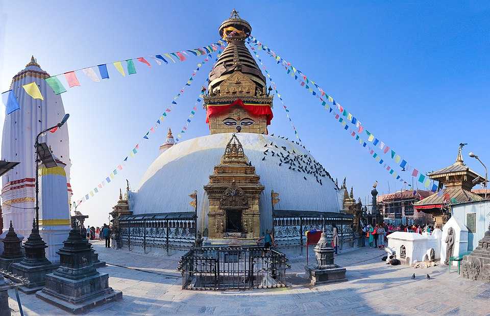

Swayambhunath Temple
Swayambhunath (Devanagari: स्वयम्भू स्तूप; Nepal Bhasa: स्वयंभू; Swayambhu Great Stupa, or Swayambu or Swoyambhu) is an ancient religious complex atop a hill in the Kathmandu Valley, west of Kathmandu city. The Tibetan and Sanskrit name for the site means 'self-arising' or 'self-sprung'.[1] The hill on which the stupa stands has been an ancient pilgrimage place considered the home of the primordial Buddha known as the Adi-Buddha. For the Buddhists throughout the world, the stupa is venerated as one of the most ancient and important stupas in the world, having hosted numerous Buddhas of the past: Koṇāgamana Buddha, Kakusandha Buddha and Kassapa Buddha.[2] For its outstanding universal value, Swayambhunath was designated a UNESCO's World Heritage Site in Nepal in 1979.[3].